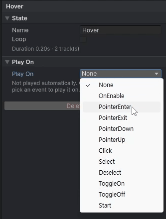

Play On
Play On sets when a state plays by itself, without code.
Choosing Play On
- Select the state tab to show the state inspector.
- Choose an event from the Play On list.
Choosing an event adds a KeyTweenTrigger component automatically.

When Each Option Plays
| Play On | Plays when |
|---|---|
None |
The state does not play by itself. Play it from code with Play or PlayAsync |
OnEnable |
The component is enabled |
Start |
Once, after the component is first enabled |
PointerEnter / PointerExit / PointerDown / PointerUp / Click |
The matching pointer event occurs |
Select / Deselect |
The matching selection event occurs |
ToggleOn / ToggleOff |
The value of the Toggle on the same object changes |
For playing from code, see API.
Example: A Hover Button
A button that grows when the mouse is over it and shrinks back when it leaves takes two states.
- A
Hoverstate: a Scale track from 1 to 1.08, with Play On set toPointerEnter. - An
Unhoverstate: a Scale track from 1.08 to 1, with Play On set toPointerExit. - Set Start to Current Value on both tracks, so that if the mouse leaves while the button is still growing, it shrinks back from where it is.
No code is needed. When the moment depends on the game (the score changed, a screen opened), leave Play On at None and play the state from code.
Things to Note
- A warning appears when two states would play at the same moment. For example,
OnEnableandStartare both called on Instantiate. - A Selectable whose
interactableis off ignores input events.OnEnableandStartstill play in that case. - Pointer events come from the EventSystem. For an object that is not UI (a SpriteRenderer, a 3D object) to get them, the camera needs a
Physics2DRaycasterorPhysicsRaycasterand the object a Collider.
Playing from a UnityEvent
You can also play a state from a UnityEvent, such as a Button's OnClick.
- Choose
KeyTween.Play (string)in the function list. - Enter the state name.
To play it in reverse, choose PlayReversed (string).